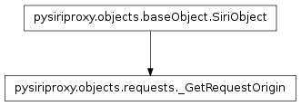

The requests module¶
The request module contains classes pertaining to creating objects which can be sent to the iPhone or Apple’s web server which pertain to creating requests to be sent to the iPhone.
The _RequestCompleted class¶
The _StartRequest class¶
The _GetRequestOrigin class¶

The SiriObject class¶

- class pysiriproxy.objects.requests.SiriObject(className, group)¶
The SiriObject class encapsulates the base functionality for all object being sent to the iPhone or to Apple’s web server.
Note
This class is meant to be subclassed to provide the implementation for a specific object.
- ProtocolVersion¶
The identifier which indicates the version of the protocol.
- classmethod isArgumentList(obj)¶
Determine if the given object is a list of arguments, or not.
- obj – The object
- classmethod isSiriObject(obj)¶
Determine if the given object is a SiriObject, or not.
- obj – The object
- makeRoot(refId=None, aceId=None)¶
Make the SiriObject the root object.
- refId – The refId for this object
- aceId – The aceId for this object
- setAceId(aceId=None)¶
Set the ace id for this object.
- aceId – The aceId for this object
- setNonNoneArguments(argumentNames, localVars)¶
Takes a list of strings which represent names of input variables and sets properties of the same name on the current object if the value of the argument is not None.
- argumentNames – The list of argument names to set
- localVars – The local variables
- setRefId(refId=None)¶
Set the ref id for this object.
- refId – The refId for this object
- toDict()¶
Convert this object into a Python dictionary.
The Requests class¶

- class pysiriproxy.objects.requests.Requests[source]¶
The Requests class contains the various types of Requests as well as a function for creating Requests of a specific type.
This class contains a factory method for creating Request object of a specific type.
- GetRequestOrigin¶
The GetRequestOrigin object type.
- RequestCompleted¶
The RequestCompleted object type.
- SetRequestOrigin¶
The SetRequestOrigin object type.
- StartRequest¶
The StartRequest object type.
The _SetRequestOrigin class¶
- class pysiriproxy.objects.requests._SetRequestOrigin(longitude=-122.03008979558901, latitude=37.331703186035199, desiredAccuracy='HundredMeters', altitude=0.0, speed=1.0, direction=1.0, age=0, horizontalAccuracy=50.0, verticalAccuracy=10.0)[source]¶
The _SetRequestOrigin class creates an object to set the origin of a request.